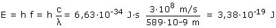
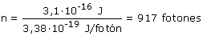

Una potencia de 3.1·10-16 W significa que
cada segundo llega una energía de 3.1·10-16 J Vamos a calcular la energía que transporta un fotón de la luz solar amarilla con λ = 589·10-9 m:  Para transportar una energía de 3.1·10-16 J se necesitarán:  Unos 900 fotones tienen que llegar a la vez al ojo para que este perciba luz amarilla
|